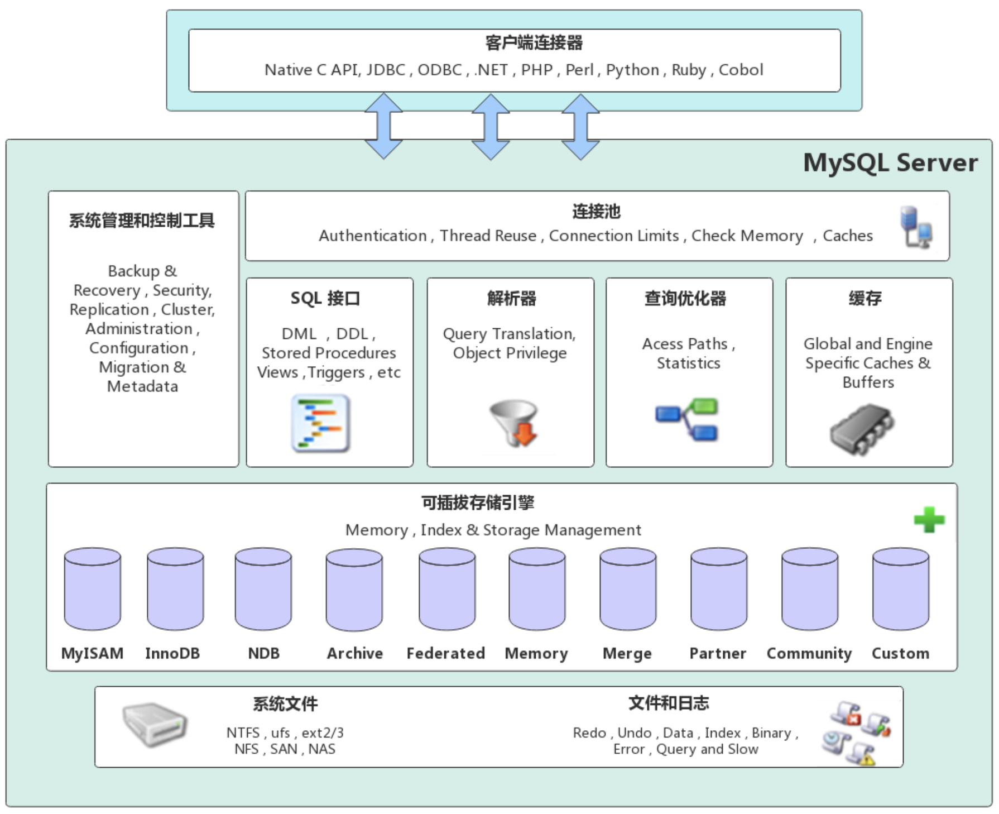
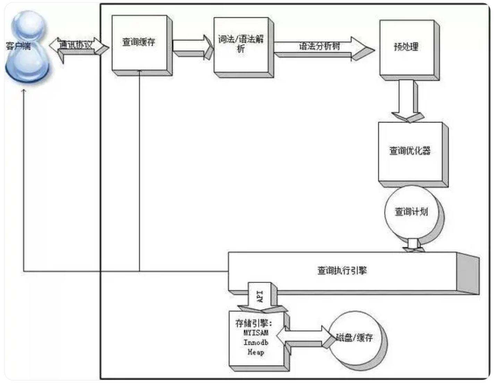

数据库-表设计规范与SQL技巧
数据库-表设计规范与SQL技巧
MySQL体系结构
Connectors：用来与客户端应用程序建立连接的数据库接口。
Management Services & Utilities：系统管理和服务控制相关的辅助工具。
Connection Pool：负责处理与用户访问有关的各种用户登录、线程处理、内存和进程缓存需求。
Sql Interface：提供从用户接受命令并把结果返回给用户的机制。
Parser：对SQL语句进行语法分析和解析，构造一个用来执行查询的数据结构。
Optimizer：优化查询语句，以保证数据检索动作的效率达到或者非常接近最优。使用一种 “选取-投影-联结” 策略来处理查询，即先根据有关的限制条件进行选取(Select 操作)以减少将要处理的元组个数，再进行投影以减少被选取元组的属性字段的个数，最后根据连接条件得到最终的查询结果。
Caches & Buffers：保证使用频率最高的数据或结构能够以最有效率的方式被访问，缓存的类型有：表缓存、记录缓存、键缓存、权限缓存、主机名缓存等。
MySQL执行select的流程
1、查询缓存
检查查询缓存是否打开，检查是否命中缓存中的数据（通过对大小写敏感的HASH查找实现的），若不命中则进行下一阶段的处理。若命中查询缓存，检查用户权限，若权限没问题，则直接把缓存数据返回给客户端。
2、语法解析器和预处理器
词法/语法解析器：将会进行语法规则的验证和解析查询（对语法解析），生成语法分析树。
预处理器：根据MySQL规则进一步检查语法分析树是否合法。例如检查表或列是否存在，解析名字和别名有没有歧义。下一步预处理器会验证权限。
3、查询优化器
优化器的作用就是找到最好的执行计划。MySQL使用CBO优化器。MySQL使用很多优化策略生成最优的执行计划，可以分为两类：静态优化（编译时优化）、动态优化（运行时优化）。
4、查询执行引擎
MySQL只是简单的根据执行计划给出的指令逐步执行。调用存储引擎实现的接口来完成执行计划。优化器根据接口可以获取表的相关信息，包括表的所有列名、索引统计信息等。将结果返回给客户端，或者返回这个查询的一些信息，如查询影响到的行数。如果查询可以被缓存，那么MySQL会将结果存放到查询缓存中。
影响MySQL数据库的常见因素
1、服务器硬件
CPU：一般情况下CPU资源不会是性能瓶颈的直接原因；MySQL不支持多cpu对同一SQL并发处理。
内存：直接影响MySQL缓冲池的大小及MySQL数据库的整体运行稳定性；如内存资源不足，容易造成MySQL的会话拥堵甚至实例重启。
存储IO：直接影响MySQL的处理性能；在大量数据变更的业务场景下，对存储的IO性能要求往往较高。
2、数据库存储引擎
MyISAM：不支持事务型查询，在OLTP类型业务场景中不建议使用。
InnoDB：支持事务型查询，支持行级锁，对并发业务支持较好。
3、MySQL参数
1）连接请求的参数：max_connections
MySQL的最大连接数，增加该值，增加mysqld进程要求的文件描述符的数量。连接请求量大时，建议调高此值，调的越高，内存开销越大。
1 | show variables like 'max_connections' |
2）全局缓存参数
key_buffer_size指定索引缓冲区的大小，它决定索引处理的速度，尤其是索引读的速度。Key_reads是内存中没有找到索引直接从硬盘读取索引的数量。使用查询缓冲，MySQL将查询结果存放在缓冲区中，今后对于同样的SELECT语句（区分大小写），将直接从缓冲区中读取结果。
1 | show variables like ' key_buffer_size'; |
3）每个连接的缓存参数
① Sort_buffer_size
每个需要进行排序的线程分配该大小的一个缓冲区。增加这值加速ORDER BY或GROUP BY操作。默认数值是2097144(2M)，可改为16777208 (16M)。
② Join_buffer_size
联合查询操作所能使用的缓冲区大小。
record_buffer_size，read_rnd_buffer_size，sort_buffer_size，join_buffer_size为每个线程独占，也就是说，如果有100个线程连接，则占用为16M*100。
③ table_open_cache
表高速缓存的大小。每当MySQL访问一个表时，如果在表缓冲区中还有空间，该表就被打开并放入其中，这样可以更快地访问表内容。
④ tmp_table_size
临时表大小。通过设置tmp_table_size选项来增加一张临时表的大小，例如做高级GROUP BY操作生成的临时表。
⑤ thread_cache_size
可以复用的保存在缓冲区中的线程的数量。当客户端断开之后，服务器处理此客户的线程将会缓存起来以响应下一个客户而不是销毁（前提是缓存数未达上限）。
4）配置InnoDB的参数
① Innodb_buffer_pool_size
InnoDB使用该参数指定大小的内存来缓冲数据和索引，其对InnoDB的重要性等于key_buffer_size对MyISAM的重要性。
② Innodb_log_buffer_size
Innodb_log缓存大小，一般为1-8M，默认为1M，对于较大的事务，可以增大缓存大小。可设置为4M或8M。
4、数据库表设计
表体量过大：字段过多或者记录数过多的“大表”，在查询中会消耗大量资源，且执行效率低；建议根据业务类型拆分大表（分区表）。
使用外键：无论是MySQL还是Oracle，都不建议采用外键进行表关联。
缺少主键：无论对于主从同步还是查询性能，主键发挥的作用都非常重要；建议所有业务表都添加主键。
5、SQL语句
多表关联：多表关联容易造成关联数据过大，影响查询效率；建议查询中的关联表数量不超过2个。
全表扫描：触发全表扫描容易造成大量IO读写，严重降低查询效率；建议在查询条件中加入带索引的过滤条件。
根据现网环境优化执行的难易度，在优化顺序可以按照：SQL语句->数据库表设计->数据库参数配置->数据库存储引擎->服务器硬件。
设计规范
数据库表设计是系统工程，影响业务功能和系统性能。设计时要规范命名，合理选择字段类型和长度，谨慎增加字段，设置主键，建立合理索引，避免使用外键，明确数据表约束，善用JSON，注意大字段，数据冷热分离，完善注释，统一同类字段。
一、规范命名
表名、字段名和索引名的命名规范是数据库设计的第一步。
- 名称要能见名知意，言简意赅，不宜过长。比如：用户表可以命名为
user，而不是u或者user_info_detail。 - 多个单词间建议使用下划线分隔，统一使用全小写格式，如
order_detail。 - 每个业务模块可使用统一前缀，如订单相关的表都以
order为前缀。 - 时间字段可统一使用
_time结尾，如create_time。 - 主键索引以
pk_开头,普通索引以idx_开头,唯一索引以uk_开头。条理清晰的命名规范是提高数据库可读性的基础。
二、选择合适的字段类型和长度
字段的类型和长度要根据实际业务需求来选择，不能一味追求大而全。如用户名可以使用varchar(32)，评论内容可以使用varchar(512)。针对固定长度的内容，要优先考虑使用char型。日期时间毫秒精度可使用bigint存Unix时间戳。选择恰当的类型和长度，可以节省存储空间，提高查询效率。
数据库字段长度表示 字符长度 还是 字节长度？
在mysql中，
varchar和char类型表示字符长度，而其他类型表示的长度都表示字节长度。也就是说，varchar和char类型的实际存储空间（占用字节长度）和字符的字符集决定，不同字符集下每个字符占用的字节长度是不一样的。如： UTF8 编码 (3字节)、GBK 编码 (2字节)
数据类型 取值范围 描述 CHAR0~255字符CHAR 是用于存储固定长度的字符串的数据类型。它需要指定字符串的最大字符长度（可以使用 CHAR(M) 来指定最大字符长度，其中的 M 即为最大字符长度），取值范围为 0 ~ 255（当最大字符长度为 0 时，MySQL 允许你向该字段中插入值，但该操作并不会成功）。如果存储的字符串长度小于指定长度，MySQL 会在字符串末尾使用 空格 字符进行填充，以使其达到指定长度。这意味着 CHAR 类型的字段始终占用指定长度的存储空间，无论实际存储的字符串长度是多少。 VARCHAR0~65,535字符VARCHAR 是用于存储可变长度的字符串的数据类型。它也需要指定字符串的最大长度，最大可为 65,535 个字符（可以使用 VARCHAR(M) 来指定最大字符长度，其中的 M 即为最大字符长度）。与 CHAR 不同，VARCHAR 只会占用实际存储的字符长度（单个字符所占据的存储空间由其使用的字符集决定）加上一定的额外字节（一或两个字节），而不会固定占用指定长度的存储空间。
char(10) 表示字符长度是10。实际存储空间 = 10 * 当前字符集下字符的字节数
bigint(4) 表示显示长度是4个字节，但是bigint类型是8个字节，所以bigint(4) 的实际存储空间长度是8个字节。
int(10) 和 bigint(10)能存储的数据大小一样吗？不一样，具体原因如下：
int 能存储4字节有符号整数。bigint 能存储8字节有符号整数。所以能存储的数据大小不一样，其中的数字 10 代表的只是数据的显示宽度。显示宽度指明Mysql最大可能显示的数字个数，数值的位数小于指定的宽度时数字左边会用空格填充，空格不容易看出。如果插入了大于显示宽度的值，只要该值不超过该类型的取值范围，数值依然可以插入且能够显示出来。建表的时候指定 zerofill 选项，则不足显示宽度的部分用 0 填充，如果是 1 会显示成 0000000001。如果没指定显示宽度， bigint 默认宽度是 20 ，int默认宽度 11。
三、谨慎增加字段
表中字段数目并非越多越好，建议单表字段数不超过20个。如字段过多时要考虑垂直拆分，将不常用的字段拆到扩展表中。对于一些可选字段，如用户的昵称、头像等，更建议单独建立一张用户扩展信息表。必要时也可以通过冗余字段来提高查询效率，如在订单表中冗余用户名称。在充分考虑实际需求的前提下，尽可能保持表的字段数精简。
- 查询效率：当表中保存的数据数量很大时，查询操作需要检索的数据也会随之增加。 如果表的字段数过多，查询操作就需要读取更多的数据，这会导致查询效率变慢。
- 存储空间：表的字段数越多，每一行数据占用的存储空间也就越大。对于大型数据库来说，这可能会导致磁盘空间的浪费。
- 数据库设计复杂性：当表的字段数过多时，数据库的设计和维护变得更加复杂。 这可能涉及到索引和关联表的设计，以确保数据的完整性和一致性。
四、主键不可或缺
每张表都必须有主键，并且要尽量使用单一主键。因为主键查询效率最高，是天然的聚簇索引。常见的主键设置方式有以下几种：自增长型(auto_increment)、全局唯一ID(UUID)、雪花算法(SnowFlake)等。尽量不要使用联合主键，因为其不仅占用更多空间，还会影响查询性能。另外主键要避免存储业务相关的值，如学号、员工号等，以便日后业务变动时更易调整。
五、合理添加索引
合理的索引设计可以大幅提升数据查询效率。但索引并非越多越好，因其会占用额外的存储空间，并影响写操作的效率。单表索引数建议控制在5个以内。针对区分度不高的字段如性别，不建议单独创建索引。针对多个查询条件，可通过建立联合索引来减少索引数量。联合索引还需要考虑字段顺序，遵循最左前缀原则。必要时还可针对字符串采用前缀索引等高级索引技术。
六、NULL值要明确
建表时就要明确每个字段是否可空。对可为空的字段一定要在创建表时显式指定为NULL，否则字段将隐式地被指定为NOT NULL。选择NULL还是NOT NULL要根据实际的业务语义。比如用户的邮箱字段可以为NULL，但性别字段可能就不允许为NULL值。NOT NULL字段在保存时可以少一个字节的存储空间，且NULL值会导致索引失效。因此除非有很明确的业务需求，否则尽量将字段都设置为NOT NULL。
如果没有特殊的理由， 一般都建议将字段定义为NOT NULL。为什么呢？
首先，NOT NULL可以防止出现空指针问题
其次，NULL值存储也需要额外的空间的，它也会导致比较运算更为复杂，使优化器难以优化SQL，NULL值有可能会导致索引失效，所以不能在NULL的字段上添加索引
如果将字段默认设置成一个空字符串或常量值并没有什么不同，且都不会影响到应用逻辑， 那就可以将这个字段设置为NOT NULL。
七、不需要严格守3NF，通过业务字段余来减少表关联
简单来说就是反范式设计。 常见形式是在第三范式(3NF)的基础上，进一步进行冗余，从而减少表关联。
回顾下什么是数据库三范(3NF)?
第一范式：对属性的原子性约束，要求属性具有原子性， 不可再分解；
第二范式：对记录的唯一性约束，要求记录有唯一标识， 即实体的唯一性，即不存在部分依赖；
第三方式：对字段的冗余性的约束， 要求任何字段不能由其他字段派生出来，它要求字段没有余，即不存在传递依赖；
假设需要设计一个产品订单表，包含以下字段： 订单ID、 用户ID、 订单日期、 产品名称、 产品价格、产品数量以及订单总价。 正常情况下，可能会分别设计订单表和产品表，并使用外键进行关联，例如：
1 | CREATE TABLE order( |
这个设计方式符合范式要求， 但在查询时需要进行表关联操作， 可能会降低查询效率。为了提高查询效率，我们可以使用反范式的设计方式，将订单表中的产品名称、 产品价格 和 订单总价 余存储到订单表中，从而避免关联查询。 例如：
1 | CREATE TABLE order( |
通过这种反范式的设计方式， 我们可以避免关联操作，提高查询效率。 但同时也带来了一些缺点，例如数据冗余、 数据更新困难等。 因此， 在实际应用中需要根据具体情况进行选择。
八、外键须谨慎
在数据库设计中，使用外键关联是一种良好的实践，可以确保数据的完整性和一致性。 外键关联可以帮助维护表之间的关系，防止无效或不一致的数据插入、 更新或删除操作。然而，在某些情况下，也存在一些缺点，这可能是导致现在不太推荐使用外键关联的原因之一。 以下是一些这种情况：
可能会导致性能问题，无其是在对大型数据集进行操作时。这是因为每次插入、 更新或删除操作都需要进行约束检查，这可能会导致额外的开销和延退。
可能会限制数据库的灵活性和可扩展性。 例如，如果需要对数据库进行分区或垂直分割，外键关联可能会导致额外的复杂性和限制
可能会导致死锁和死循环， 特别是在进行并发操时。这可能会导致数据库出现不稳定的状态，从而影响系统的性能和可用性
可能会导致数据库的维护和管理成本的增加。 这是因为外键关联需要额外的管理和维护工作，例如添加、 修改或删除外键约束时需要额处的测试和验证
因此，在决定是否使用外键关联时， 需要考虑实际业务需求和场景，并进行权衡和决策。 在某些情况下，可以采用其他方法来保证数据的完整性和一致性，例如使用应用程序逻辑或数据库触发器来实现约束检查和数据操作。同时，需要注意数据库设计的基本原则和最佳实践， 例如避免数据余、 遵循规范化原则和正常化理论等。 因此实际项目中往往在程序层面来保证数据的一致性，很少使用外键这种强约束。同理像触发器、存储过程等也要尽量避免使用。
九、时间的类型选择
时间类型的选择一般都要好好考虑，因为不同的类型存储的格式不同。对于MySQL来说， 主要有date、 datetime、 time、 timestamp和year
date：表示的日期值，格式yyyy-mm-dd范围1000-01-01 到9999-12-31，3字节
time：表示的时间值，格式hhmm:ss，范围-838:59:59到838:59:59，3字节
datetime: 表示的日期时间值，格式yyyy-mm-ddhh:mm:ss，范围1000-01-0100:00:00到9999-12-3123:59:59 8字节，跟时区无关
timestamp: 表示的时间值，格式为yyyymmddhhmmss，范围1970-01-01 00:00:01到2038-01-19 03:14:07，4字节，跟时区有关
year: 年份值，格式为yyyy。 范围1901到2155，1字节
推荐优先使用datetime类型来保存日期和时间， 因为存储范围更大， 且跟时区无关。
十、冷热分离
对于一些历史归档数据，如過期的订单、日志等，可以定期从主表中移出，存入单独的历史表。历史表可以采用分区、分表等技术，并适当降低其维护成本。冷热数据分离不仅可以控制主表的数据量，还能提高线上查询的效率。冷热表还可根据各自的特点来设置不同的存储介质、备份策略等。
十一、注释要完善
表和字段都要添加清晰、准确的注释说明,这是软件工程的基本要求。注释要用通俗易懂的语言描述其业务含义，避免使用拼音、拼音首字母缩写等。如果某个字段存在枚举值，一定要将每个值所代表的含义都列出来。注释要与时俱进，代码有改动时要同步更新注释，否则就是无效注释。完善的注释是保证系统可维护性的重要一环。
十二、优先考虑逻辑删除，而不是物理删除
物理删除：把数据从硬盘中删除， 可释放存储空间
逻辑删除：给数据添加一个字段，比如is_deleted 以标记该数据已经逻辑删除。
为什么推荐用逻辑删除， 不推荐物理删除呢？
数据恢复困难，物理删除会导致索引树重构 。
十三、每个都需要添加通用字
1 | id: 主键，一个表必须得有主键 |
参考文档：
存储之道：MySQL 中的字符串数据类型之 CHAR 与 VARCHAR
 微信
微信